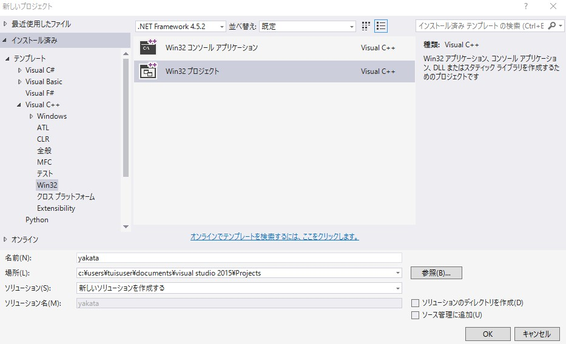
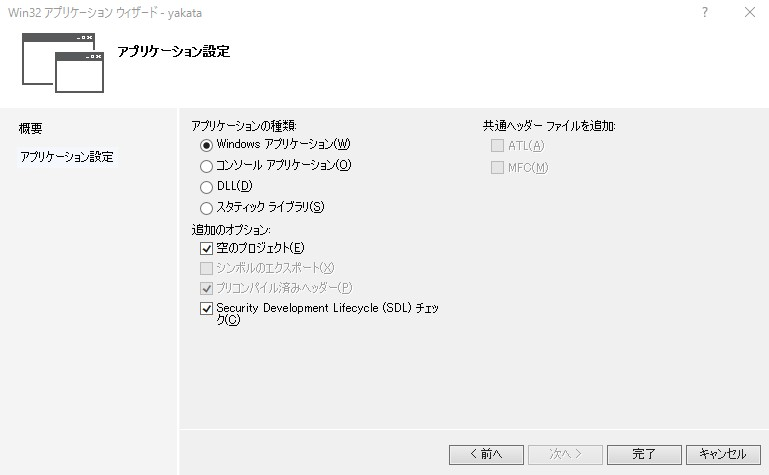
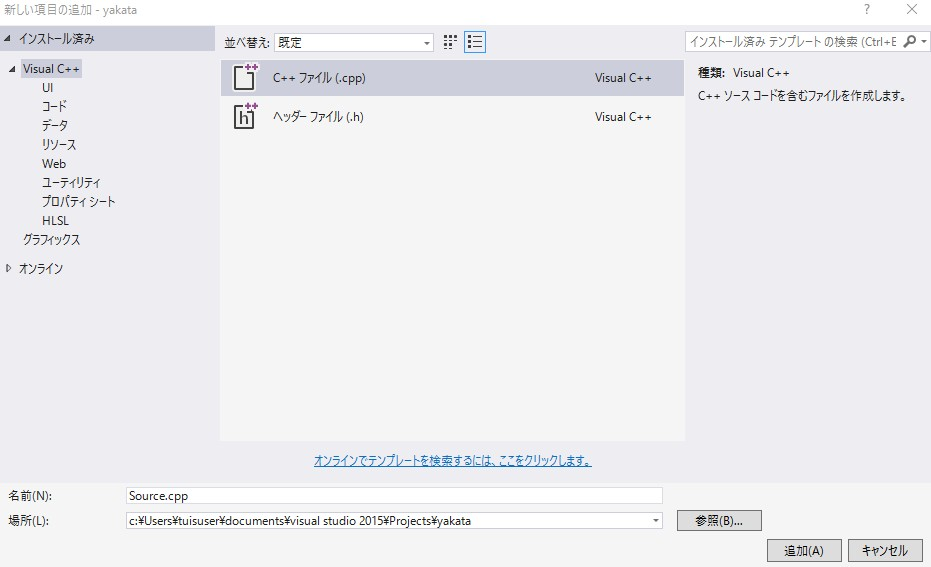
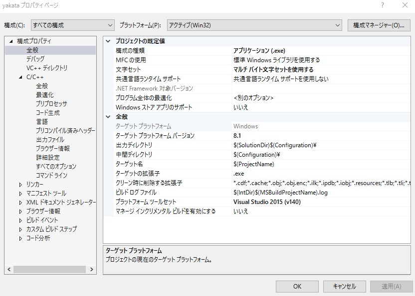
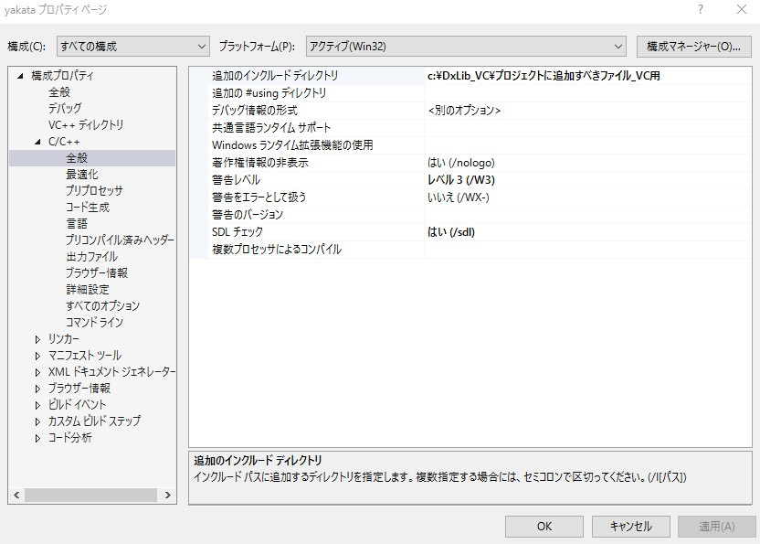
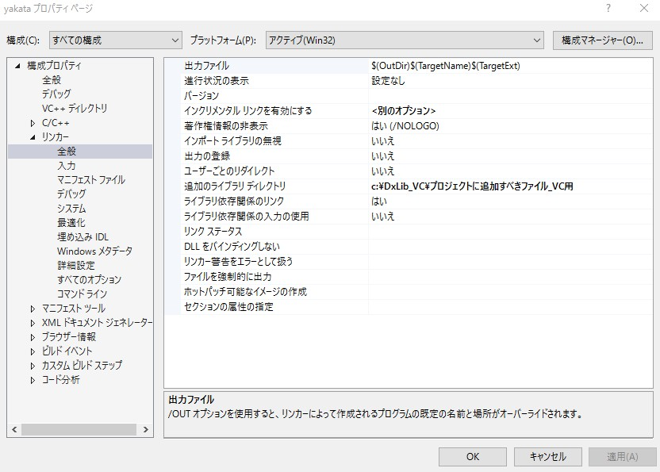
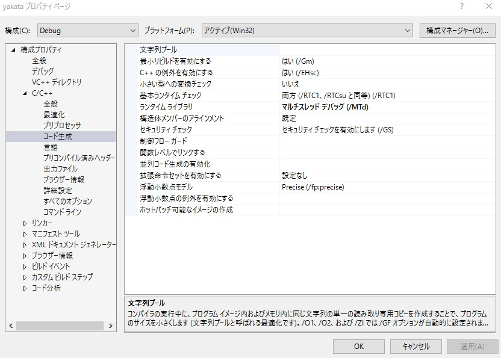
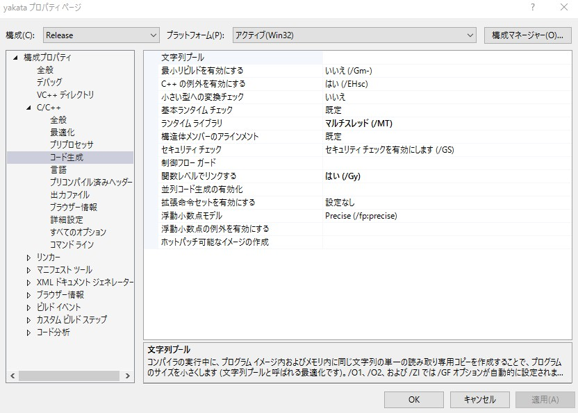

C言語を一通り学び終えて、なにかゲーム作りたいーって人が対象となります。
Visual Studio2015及び2017を併用しての説明となります。
ゲームを作る上で初心者でも簡単に扱えるライブラリの導入方法を説明します。
今回はDlLibの導入について説明します。ちなみに画像を多めに使って説明します。
以下のURLからDXライブラリをダウンロードしてください。
Dxライブラリ置き場 HOME
というかそのサイトから導入方法の一通りは説明されているのでそこを見ても構いませんし、ここで設定を行っても構いません。
ダウンロードが終わりましたらダウンロード先のフォルダを開いてください。
そこにあるDxLibをCドライブのとこに移動させてください。
それを済ませたらパソコンへの導入は終了です。
では、Visual Studioへの導入方法を説明します。Visual Studioの扱いはC言語で少なからず知っていると思うので多少飛ばす部分があるかもしれませんがご了承ください。
まず、Visual Studioを起動して新しいプロジェクトを作成する手前までいってください。そうすると以下のようなウィンドウが出ると思います。

上のように
【テンプレート】→【Visual C++】→【Windows】→【Win32】→【Win32プロジェクト】
を選択してください。
名前及び場所は任意です。そしたら【OK】を押してください。
以下の表示が出ると思います。

上の画像のようにとりあえずなっているか確認してください。
これは私のミスですが
【Security Development Lifecycle(SDL)チェック】
からはチェックを外してください。
ちなみにVisual Studio 2017は元よりそのような項目はないので気にしないでください。
そしたら【完了】を押してください。
なにもないプロジェクトが生成されるのでいつもの通り【main.cpp】を作ってください。特に説明はありません。

ここから本格的に導入の説明をします。これを間違えるとうまくいかないので目をかっぽじって行ってください。
では、プロパティを開いて以下を表示させてください。

では、左上の【構成(C)】を【すべての構成】にして
【構成プロパティ】を【全般】で表示させてください。
そしたら右に表示されてる
【文字セット】を【マルチバイト文字セットを使用する】に変更してください。
まだ【OK】を押して閉じないでください。ほかは変更せずに【適用】を押してください。
次に【構成(C)】はそのままに
【構成プロパティ】→【C/C++】→【全般】
を表示してください。
以下のような感じに表示されると思います。

では【追加のインクルードディレクトリ】を変更します。私が最初のように話した通り、CドライブにDxLibを移した人は以下の記述をコピーして貼り付けてください。
【c:\DxLib_VC\プロジェクトに追加すべきファイル_VC用】
そうでない方は自身のパソコンに入っている【DxLib_VC】の位置を入れてください。それが済んだら【適用】を押してください。
次に【構成(C)】をそのままに
【構成プロパティ】→【リンカー】→【全般】
を表示させてください。
以下のような感じに表示されたと思います。

では
【追加のライブラリディレクトリ】
を変更します。
先ほどと同じように
【c:\DxLib_VC\プロジェクトに追加すべきファイル_VC用】
をコピーして貼り付けてください。
全く同じもので不安に思うかもしれませんが大丈夫です。違う場所に【DxLib_VC】がある人は先ほどと同じように指定してください。
それが済んだら【適用】を押してください。
今回から【構成(C)】を変更します。
【構成(C)】を
【すべての構成】→【Debug】
に変更してください。
そのあとに
【構成プロパティ】→【C/C++】→【コード生成】
を表示させてください。
以下のように表示されると思います。

では
【ランタイムライブラリ】
を変更します。
やり方は簡単で
【マルチスレッドデバッグ(/MTd)】
に変更してください。
それが済んだら【適用】を押してください。
【構成(C)】を
【すべての構成】→【Release】
に変更してください。
表示はそのままで構いません。以下のように表示されると思います。

では
【ランタイムライブラリ】
を変更します。
やり方は先ほどと同じように簡単で
【マルチスレッド(/MT)】
に変更してください。
それが済んだら【適用】を押してください。
加えて【OK】を押してください。
設定は以上となります。
試しに以下のソースコードをコピペして実行してください。
- #include "DxLib.h"
- // プログラムは WinMain から始まります
- int WINAPI WinMain( HINSTANCE hInstance, HINSTANCE hPrevInstance, LPSTR lpCmdLine, int nCmdShow )
- {
- if( DxLib_Init() == -1 ) // ＤＸライブラリ初期化処理
- {
- return -1 ; // エラーが起きたら直ちに終了
- }
- DrawPixel( 320 , 240 , GetColor( 255,255,255 ) ) ; // 点を打つ
- WaitKey() ; // キー入力待ち
- DxLib_End() ; // ＤＸライブラリ使用の終了処理
- return 0 ; // ソフトの終了
- }